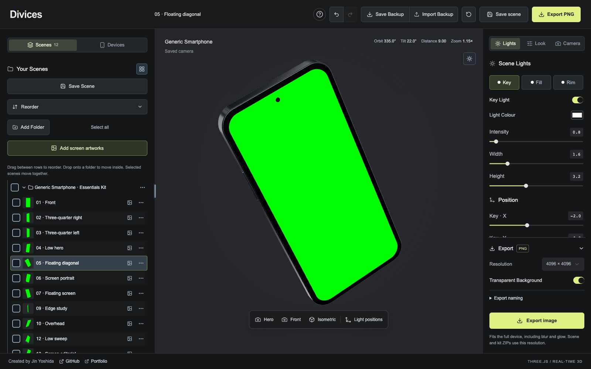
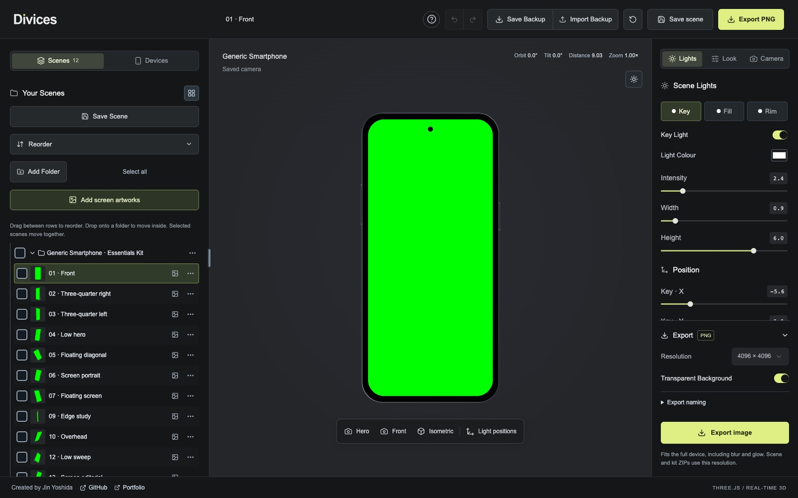
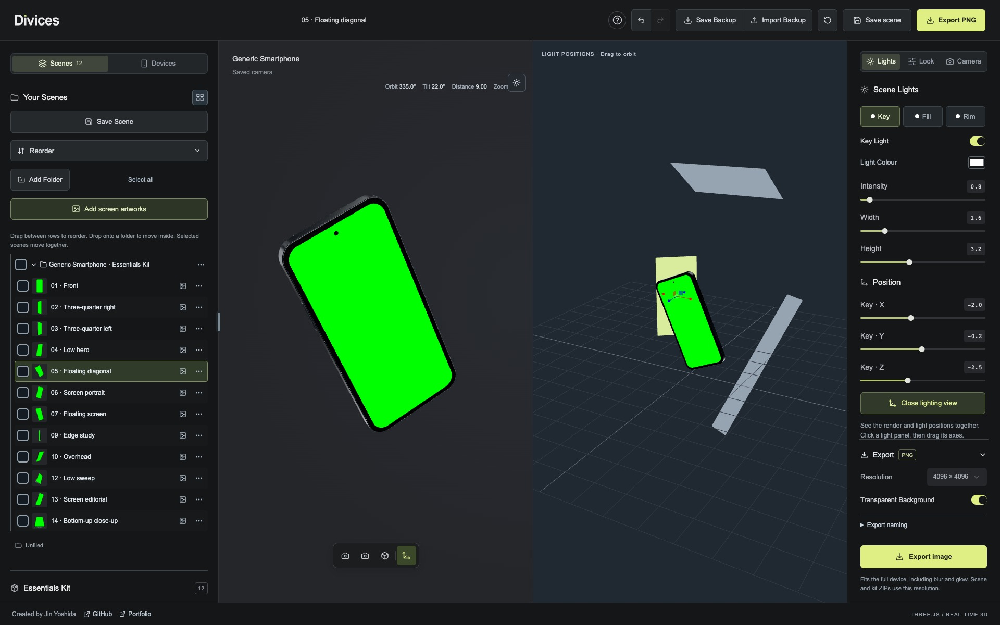
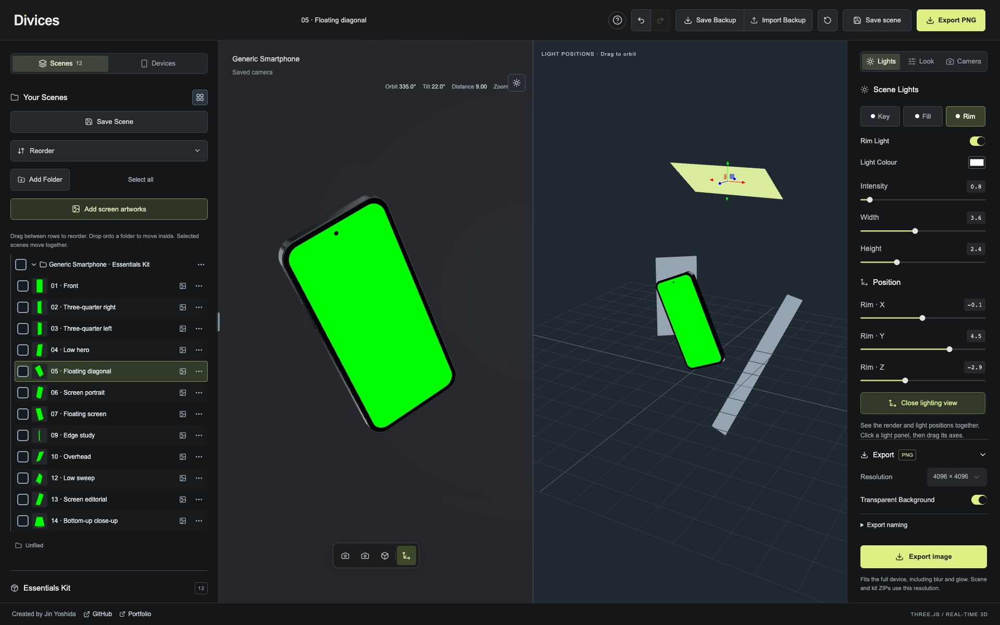
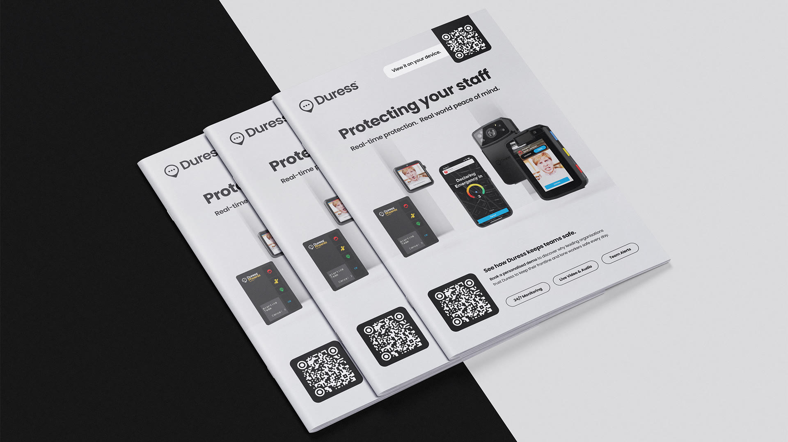

Work 02 / 11
Divices
An interactive 3D mockup studio for turning screen designs into polished device renders, directly in the browser.

Overview
A studio for screen design.
Divices brings the process of staging, lighting and rendering device mockups into one browser workspace. I built it around a simple starting point: upload a screen design, choose a phone or tablet, and explore how it looks in three dimensions. The device library includes a generic smartphone alongside iPhone, iPad and Samsung models, with saved compositions that make it easy to get started.
The viewport makes the setup as much a part of the experience as the final image. Camera angle, perspective and depth of field can be adjusted alongside the device finish and screen reflections. A split lighting view shows the render and the light positions together, so moving a light or changing its size has an immediate, visible effect on the result.
For larger sets of artwork, scenes can be organised into folders and reused with different screens. Individual images or whole batches can be exported as transparent PNGs at up to 4096 × 4096 pixels. Scenes and artwork stay in the browser, with backup and import tools for moving a workspace between sessions or computers.
Gallery



Next project
Duress Brochures
